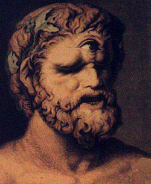
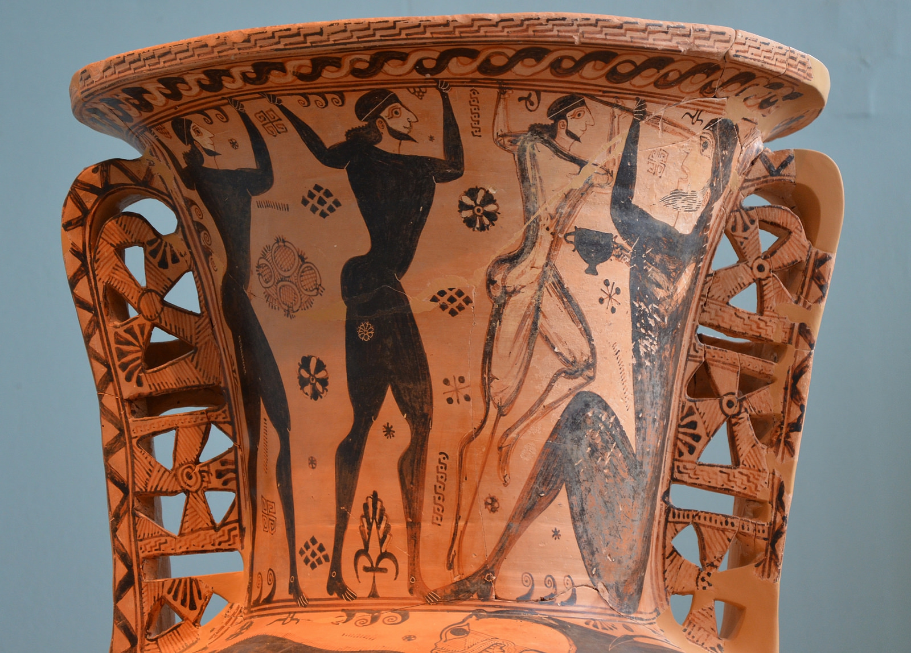

Vol. 1: Mitologia Griega
Ciclope
Un cíclope (que significa "de ojo redondo") es un gigante con un solo ojo que aparece por primera vez en la mitología de la Grecia antigua. Los griegos creían que una raza entera de cíclopes vivía en una tierra lejana sin ley ni orden. Sin embargo, los cíclopes cuentan con muchos talentos: se les atribuye la creación de los rayos que Zeus usaba como armas para lanzar y la construcción de muros de fortificación gigantescos, como aquellos que se pueden observar en los yacimientos micénicos en la actualidad.


Hesíodo (alrededor de 700 a.C.) nos cuenta, en su Teogonía, que los cíclopes eran hijos de la Tierra (Gea) y el Cielo (Urano), lo que los convierte en la generación que precedió a los dioses del Olimpo. Hesíodo nombra a tres cíclopes: Brontes (Trueno), Estérope (Relámpago) y Arges (Brillo). Este grupo engendraría luego a más de su clase, aunque Apolo terminó matando al trío para vengarse de Zeus, quien mató a su hijo Asclepio (o Esculapio), el semidios y maestro de la medicina. Se dice que los fantasmas de los tres rondan el volcán del monte Etna, en Sicilia. Efectivamente, muchas tradiciones griegas locales asociaban a los cíclopes con los volcanes, tal vez porque sus cráteres nos recuerdan al ojo único de los cíclopes, a menudo descrito en la literatura antigua como "ardiente". Hesíodo también cuenta que los cíclopes eran maestros artesanos y asistentes del dios Hefesto, el mejor herrero e inventor ingenioso (además de un residente ocasional del monte Etna).
No es de sorprender que, debido a su posición como monstruosidades rebeldes en lugar de dioses, los cíclopes no formaran una parte importante de la religión griega. Sin embargo, había un lugar donde se adoraba a los gigantes de un solo ojo: el istmo de Corinto, tal vez debido a una conexión con Poseidón, a menudo considerado el padre del cíclope Polifemo (véase a continuación). Los Juegos Ístmicos se celebraban aquí cada dos años en honor a Poseidón, y había un altar que recibía sacrificios para los cíclopes.